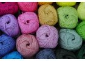
Bavlněné příze
Využijete snad na cokoli... příze na jarní - podzimní čepice, nákrčníky, plavky, svetříky, šaty, sukně, návleky, hračky, dečky, povlaky na polštáře, kabelky, obaly na mobily, knihy, květináče a další doplňky a dekorace do domácnosti, náramky a jiné tvoření.
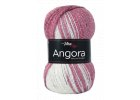
Příze s obsahem vlny
Využijete na svetříky, šaty, tuniky, vesty, čepice, šály, nákrčníky apod
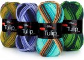
Akrylové příze
Využijete na svetříky, šaty, tuniky, vesty, čepice, šály, nákrčníky apod
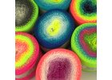
Směsové příze
Využijete na svetříky, šaty, tuniky, vesty, čepice, šály, nákrčníky apod
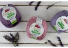
Příze s bambusem
Využijete na svetříky, šaty, tuniky, vesty, čepice, šály, nákrčníky apod
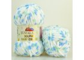
Žinilkové příze
Využijete na svetříky, šaty, tuniky, vesty, čepice, šály, nákrčníky apod
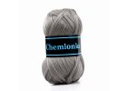
Polyesterové a polyamidové příze
Využijete na svetříky, šaty, tuniky, vesty, čepice, šály, nákrčníky apod
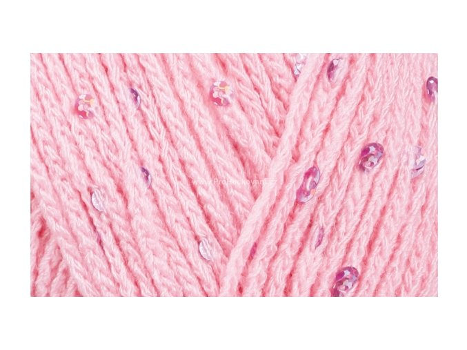
Příze s lurexem a flitry
Využijete na svetříky, šaty, tuniky, vesty, čepice, šály, nákrčníky apod
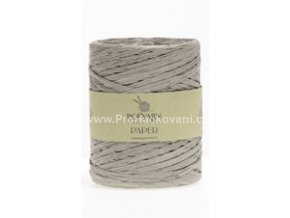
Papírová příze
Papírová příze je vyrobená z recyklovaného papíru a je vhodná k výrobě košíků metodou macramé.
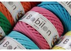
Špagáty, textilní příze
Vhodné na košíky, závěsné koše, pufy, podsedáky, koberce, rohožky, prostírání, dekorativní polštáře, obaly na květináče, potahy, pelíšky pro domácí mazlíčky, kabelky, tašky, batůžky a dále dle vaší fantazie :-)
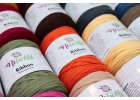
Ribbon
Je ideální pro tvorbu různých lehkých úpletů např. kabelky, tašky. Využijete ale také na koberce, rohožky, prostírání, povlaky na polštáře, atd.
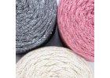
Šňůry a Macramé
Můžete je použít v mnoha případech na háčkované košíky, kabelky, tácky, pořadníky a další výrobky.
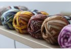
Ponožkové příze
Příze určené především pro výrobu ponožek, některé se však dají využít i k jiným klasickým úpletům. Většinou se jedná a směsové příze, aby bylo zajištěno nejen příjemné nošení, ale také odolnost.
Duhová klubíčka
Krásná duhová klubíčka v zajímavých barevných kombinacích s postupnými přechody jednotlivých tónů i jednobarevná, vyrobená z kvalitní bavlny nebo s příměsí akrylu. Využijete na letní topy, halenky, šaty, sukně a především šátky pro dospělé i malé parádnice. Využít můžete i na bytové dekorace nebo lehké deky.
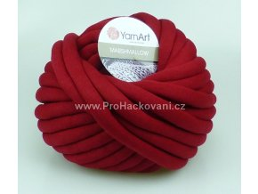
Pletení na rukou
příze Marshmallow k pletení na rukou nebo velkých jehlicích.
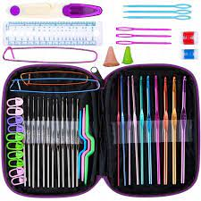
Háčky
Zda budu vyrábět košík, potřebuji háček, který vydrží utahování a nebudou mě z něj bolet ruce ( v tomto případě doporučujeme háček na hrubší příze o síle 5 a více na příklad: hliníkový háček.Ergonomický háček je velice pohodlný a jak už je z jeho názvu patrné, je ergonomický přizpůsobivý, ale plastový, proto je zde opět velmi důležité vědět, na co háček chceme. Háček Ergonomics doporučujeme na „mravenčí práce“, háčkování hraček, drobných aplikací, šátků, oblečení a další.
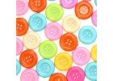
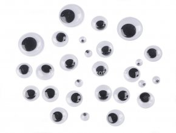
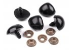
Knoflíky, oči, štítky, čumáčky
Oči, čumáčky jsou dobrý pomocník pro výrobu zvířátek - hraček.
Knoflíky pro výrobu oblečení, hraček, ložní prádlo.
Natrhu se objevuje široká škála velikostí, barev a druhů materiálu.
Štítky pro označení domácí/ruční výroby.
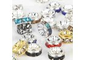
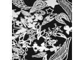
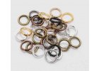
Komponenty
Komponenty nejčastěji používané pro výrobu šperků, náramků, řetízků, náhrdelníků, růženců, náušic atd...
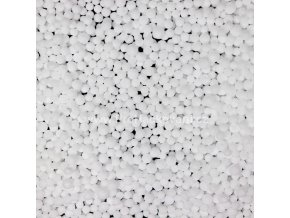
Výplň
výplňový materiál jako jsou polystyrenové kuličky, duté vlákno, pohanka.
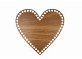
Košíková dna
Na trhu se objevuje spousta druhů, tvarů, velikostí a barev
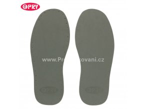
Podrážky a podešve
Pro výrobu háčkované obovy. různé druhy a velikosti
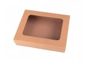
Obalové materiály
A třešnička nakonec, obalový materiál.
Krabičky, dárkové krabičky, vánoční- velikonoční pytlíky a obaly a spousta dalšího...